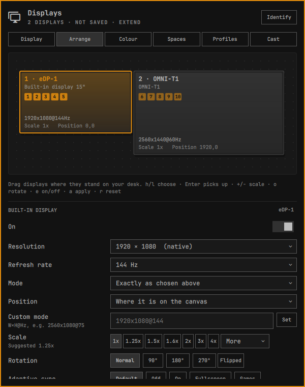
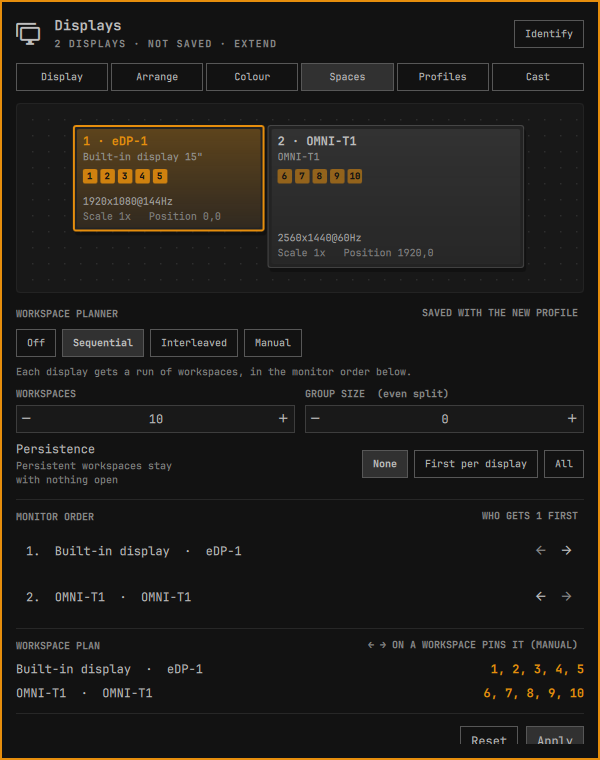
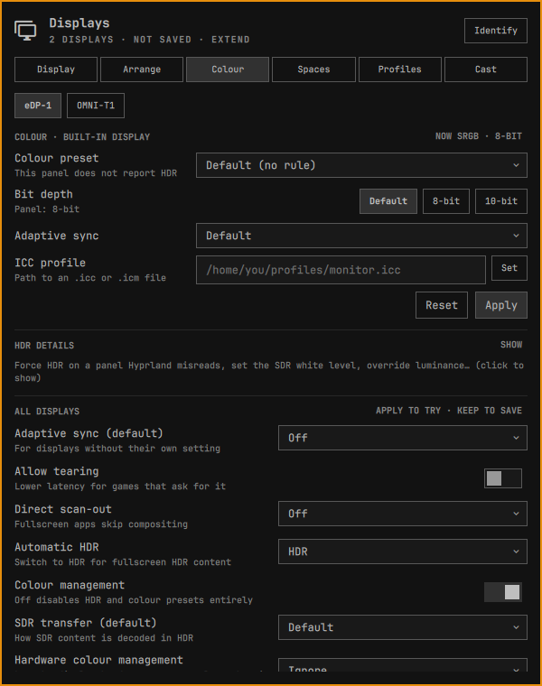

Every display setting in one panel, with a safety net.



Every change waits for Keep and reverts by itself, even if the shell dies.
Matched by panel, applied from boot and on hotplug.
Laptop, Apple and DDC/CI monitors, HDR-aware.
Miracast, AirPlay, or a tablet as a screen over VNC.
One managed block in monitors.lua, with backups and restore.
h/l to choose, Enter to pick up, +/− to scale, a to apply.